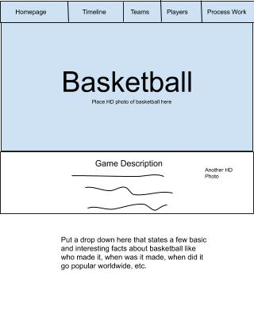
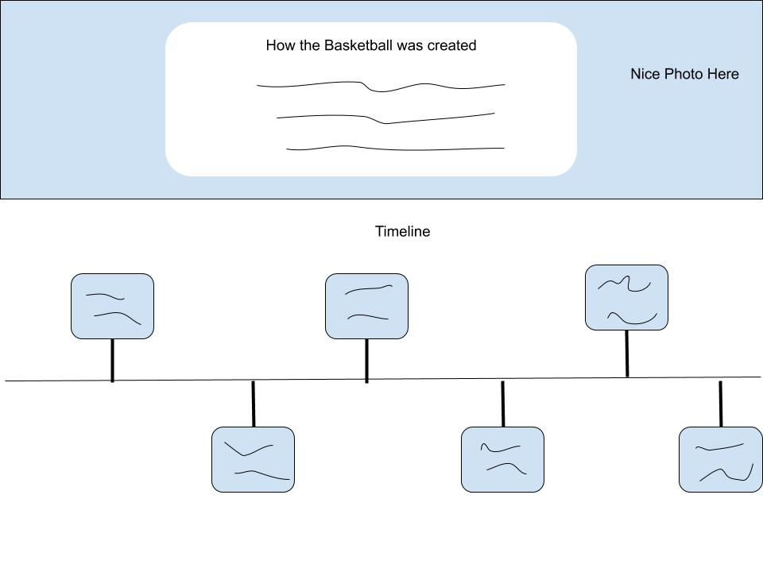
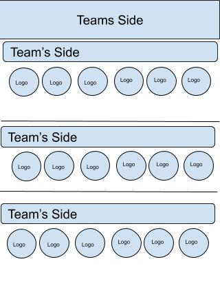
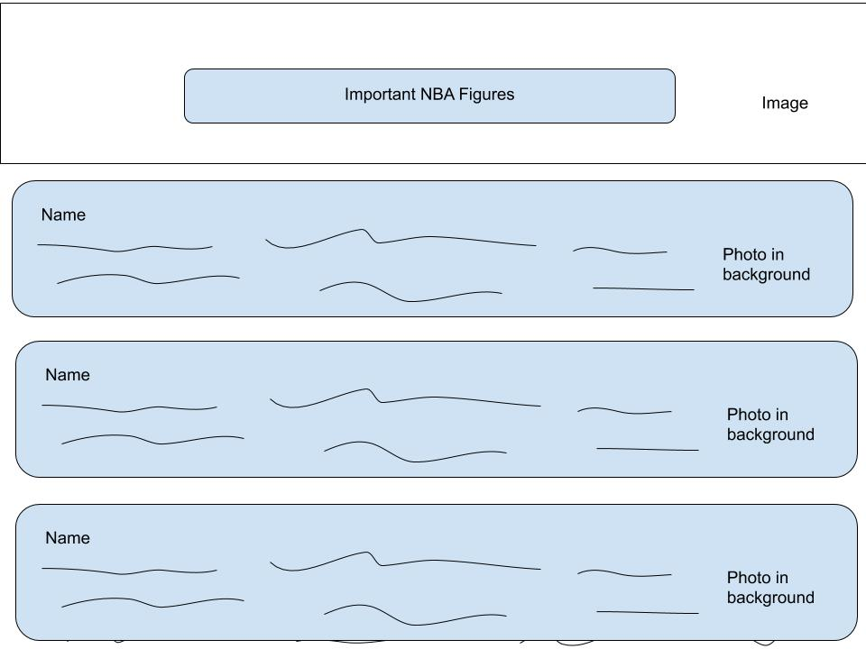

Works Cited
- https://www.britannica.com/sports/basketball
- https://www.sutori.com/story/basketball-timeline--SX6NKad3Z9fhg1ioYq8c3xhQ
- https://www.britannica.com/sports/basketball/U-S-professional-basketball#ref403126
- https://www.worldofbasketball.org/basketball-history.htm
- https://www.history.com/this-day-in-history/nba-is-born
- https://www.fiba.basketball/history
-
https://www.biography.com/athlete/wilt-chamberlain#:~:text=He%20achieved%20an%20average%20of,Air%2C%20California%2C%20in%201999.
https://www.nba.com/history/legends/profiles/wilt-chamberlain#:~:text=Wilt%20Chamberlain%20was%20one%20of%20the%20most%20imposing%20figures%20in%20NBA%20history.&text=He%20was%20the%20only%20NBA,and%20most%20rebounds%20(55).
- https://www.britannica.com/biography/Larry-Bird
-
https://www.biography.com/athlete/larry-bird#:~:text=Larry%20Bird%20Biography&text=Basketball%20icon%20Larry%20Bird%20won,career%20with%20the%20Boston%20Celtics.
-
https://www.sportscasting.com/whats-the-50-40-90-club-in-the-nba-and-how-many-members-does-it-have/
- https://www.britannica.com/biography/Michael-Jordan
- https://www.nba.com/history/legends/profiles/michael-jordan
-
https://www.biography.com/athlete/
michael-jordan#:~:text=Jordan%20was%20born%20on%20February,win%20every%20game%20he%20played.&text=Jordan's%20father%2C%20James%2C%20introduced%20him,basketball%20court%20in%20their%20backyard.
-
https://www.biography.com/athlete/magic-johnson
-
https://www.biography.com/athlete/kareem-abdul-jabbar
-
https://www.seriousfacts.com/basketball-facts/
-
https://www.factretriever.com/basketball-facts
-
https://www.cbc.ca/kidscbc2/the-feed/seven-fun-facts-you-may-not-know-about-basketball
-
https://www.factmonster.com/sports/basketball/basketball-facts
Outline



Sitemap Tree
.jpg)